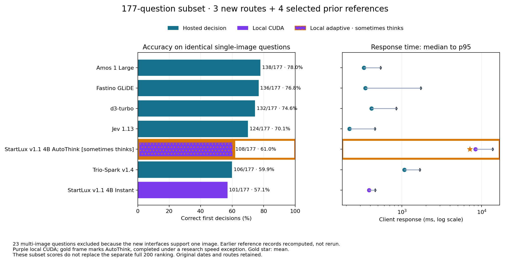

Attribute binding and set logic
Find objects that satisfy several visible properties at once.
10 questions in this subset; 10 in the full bank.
Open the subset report and all named category scores · Full text AutoThink analysis

| Model | Correct /177 | Accuracy | Mean | Median | p95 | Test date |
|---|---|---|---|---|---|---|
| Amos 1 Large | 138/177 | 78.0% | 356 ms | 333 ms | 539 ms | 2026-10-20 |
| Fastino GLiDE | 136/177 | 76.8% | 632 ms | 347 ms | 1,722 ms | 2026-10-23 |
| d3-turbo | 132/177 | 74.6% | 464 ms | 415 ms | 845 ms | 2026-10-20 |
| Jev 1.13 | 124/177 | 70.1% | 255 ms | 220 ms | 457 ms | 2026-10-20 |
| StartLux v1.1 4B AutoThink✦ Local · CUDA · Q8 · sometimes thinks | 108/177 | 61.0% | 7,119 ms | 8,363 ms | 13,732 ms | 2026-10-29 |
| Trio-Spark v1.4 | 106/177 | 59.9% | 1,143 ms | 1,072 ms | 1,673 ms | 2026-10-29 |
| StartLux v1.1 4B InstantLocal · CUDA · Q8 | 101/177 | 57.1% | 391 ms | 387 ms | 461 ms | 2026-10-29 |
The purple fill identifies local CUDA execution; the gold frame marks adaptive generation. It reported generation on 99/177 image calls (55.9%). The native budget was512 tokens. This completed under the explicit research exception to the normal speed screen.
Trio-Spark and the two StartLux routes support one image per request. They completed the 177 single-image questions in the frozen bank. The other 23 questions require multiple images, which these interfaces reject. This comparison covers a subset; the full 200-question scores and ranking above remain unchanged.
Trio-Spark scored 106/177 (59.9%), StartLux Instant 101/177 (57.1%), and StartLux AutoThink 108/177 (61.0%). Each returned 177 usable first decisions. On these identical items, the earlier Amos run scored 138/177 (78.0%), Fastino GLiDE 136 (76.8%), D3 Turbo 132 (74.6%) and Jev 1.13 124 (70.1%), recomputed from existing records. These four are selected reference routes; the subset chart is not a ranking of every previously tested model.
AutoThink's purple fill connects it to the local CUDA measurements. A gold frame and ✦ badge identify its adaptive generation. It scored seven answers above Instant, with 7.12 s mean, 8.36 s median and 13.73 s p95. Instant measured 391 / 387 / 461 ms. AutoThink generated on 99/177 calls (55.9%) in this image subset, so the fast path was used less often than in text. Its full image run was explicitly allowed to exceed the normal two-second screen for research.
AutoThink uniquely answered 20 images correctly, Instant uniquely answered 13, both answered 88 correctly and both missed 56. Relative to Instant, AutoThink improved document reconciliation 6/10 → 8/10 and navigation/planning 3/10 → 5/10; spatial relationships fell 9/10 → 7/10. Each score refers to this subset's category counts. The two released variants have different weights and prompt attention, so this does not isolate the effect of a reasoning toggle.
It reported 45,679 output tokens; 68 calls reported exactly the native 512-token budget. The API did not reveal the thoughts or an explicit budget-exhaustion flag. The StartLux implementation describes a confidence gate for immediate decisions or extra generation; the exact local gate was not exposed.
Trio's image mean / median / p95 were 1,143 / 1,072 / 1,673 ms. Its 56,718 reported input tokens imply approximately $0.00238216 at the listed tariff. This is an estimate from tokens × tariff, rather than an API monetary receipt. The v1.3 alias served the October 28 v1.4 release in text; the image endpoint did not return a dated version field, so that image identity is qualified by the alias and provider release notice.
Turion accepted image-bearing requests but chose “none” on all four solid-red/blue binding probes. It did not demonstrate pixel binding on the tested endpoint and was not assigned an image score.
The original reviewed PNG/JPEG bytes and dimensions were submitted unchanged. Both StartLux models and Trio passed red/blue binding checks; their two-image requests were rejected. Provider-controlled internal preprocessing still applies. The local server advertises one image and 262,144 processed pixels, and accepted a 768×768 test fixture.
Local tests ran sequentially through Ollaya 0.17.0, CUDA and Q8_0 on direct wired LAN. The API did not identify the precise GPU, so the new badges say Local · CUDA · Q8. They share the earlier RTX 2060 purple to identify local execution; the provenance remains explicit. Warm-ups and loading are separate. Hardware and electricity costs were not measured. All records are first attempts with no scored retries.
Question counts differ within this subset: 17 categories retain all 10 items, sequential state tracking has six, inspection against a reference has none, and matching across images has one. A one-item category cannot establish a broad skill. The table shows counts and marks empty categories as unavailable. The full 200-question category distribution is unchanged.
Same177 questions in every row; selected references only. Each cell shows correct / tested and accuracy. The fixed 0–100% heatmap encodes accuracy. Unavailable means no items from this category occur in the subset.
| Model | Attribute binding and set logic · 10 questions | Conditional counting · 10 questions | Spatial relationships · 10 questions | Connectivity and reachability · 10 questions | Navigation and planning · 10 questions |
|---|---|---|---|---|---|
| Amos 1 Large | 9/1090.0% | 9/1090.0% | 8/1080.0% | 6/1060.0% | 7/1070.0% |
| Fastino GLiDE | 9/1090.0% | 8/1080.0% | 9/1090.0% | 6/1060.0% | 5/1050.0% |
| d3-turbo | 9/1090.0% | 7/1070.0% | 8/1080.0% | 7/1070.0% | 7/1070.0% |
| Jev 1.13 | 9/1090.0% | 8/1080.0% | 8/1080.0% | 5/1050.0% | 4/1040.0% |
| StartLux v1.1 4B AutoThink✦ Local · CUDA · Q8 · sometimes thinks | 9/1090.0% | 5/1050.0% | 7/1070.0% | 4/1040.0% | 5/1050.0% |
| Trio-Spark v1.4 | 9/1090.0% | 7/1070.0% | 8/1080.0% | 4/1040.0% | 4/1040.0% |
| StartLux v1.1 4B InstantLocal · CUDA · Q8 | 9/1090.0% | 4/1040.0% | 9/1090.0% | 4/1040.0% | 3/1030.0% |
| Model | Rotation and reflection · 10 questions | Geometry, folding and fit · 10 questions | Visual rule application · 10 questions | Sequential state tracking · 6 questions | Constraint satisfaction · 10 questions |
|---|---|---|---|---|---|
| Amos 1 Large | 6/1060.0% | 7/1070.0% | 7/1070.0% | 6/6100.0% | 6/1060.0% |
| Fastino GLiDE | 6/1060.0% | 6/1060.0% | 6/1060.0% | 6/6100.0% | 7/1070.0% |
| d3-turbo | 6/1060.0% | 7/1070.0% | 5/1050.0% | 6/6100.0% | 5/1050.0% |
| Jev 1.13 | 6/1060.0% | 3/1030.0% | 5/1050.0% | 6/6100.0% | 6/1060.0% |
| StartLux v1.1 4B AutoThink✦ Local · CUDA · Q8 · sometimes thinks | 6/1060.0% | 4/1040.0% | 3/1030.0% | 3/650.0% | 4/1040.0% |
| Trio-Spark v1.4 | 5/1050.0% | 5/1050.0% | 3/1030.0% | 5/683.3% | 4/1040.0% |
| StartLux v1.1 4B InstantLocal · CUDA · Q8 | 5/1050.0% | 5/1050.0% | 3/1030.0% | 4/666.7% | 4/1040.0% |
| Model | Flowcharts and decision trees · 10 questions | Causal and counterfactual reasoning · 10 questions | Charts and quantitative comparisons · 10 questions | Document reconciliation · 10 questions | Interface state decisions · 10 questions |
|---|---|---|---|---|---|
| Amos 1 Large | 8/1080.0% | 7/1070.0% | 7/1070.0% | 8/1080.0% | 10/10100.0% |
| Fastino GLiDE | 9/1090.0% | 8/1080.0% | 9/1090.0% | 7/1070.0% | 10/10100.0% |
| d3-turbo | 7/1070.0% | 6/1060.0% | 10/10100.0% | 6/1060.0% | 10/10100.0% |
| Jev 1.13 | 7/1070.0% | 7/1070.0% | 7/1070.0% | 7/1070.0% | 10/10100.0% |
| StartLux v1.1 4B AutoThink✦ Local · CUDA · Q8 · sometimes thinks | 7/1070.0% | 5/1050.0% | 6/1060.0% | 8/1080.0% | 9/1090.0% |
| Trio-Spark v1.4 | 6/1060.0% | 5/1050.0% | 7/1070.0% | 6/1060.0% | 8/1080.0% |
| StartLux v1.1 4B InstantLocal · CUDA · Q8 | 6/1060.0% | 5/1050.0% | 5/1050.0% | 6/1060.0% | 9/1090.0% |
| Model | Inspection against a reference · 0 questions | Matching across images · 1 questions | Image and text consistency · 10 questions | Perspective and knowledge tracking · 10 questions | Insufficient evidence · 10 questions |
|---|---|---|---|---|---|
| Amos 1 Large | Unavailable | 1/1100.0% | 9/1090.0% | 8/1080.0% | 9/1090.0% |
| Fastino GLiDE | Unavailable | 1/1100.0% | 9/1090.0% | 6/1060.0% | 9/1090.0% |
| d3-turbo | Unavailable | 1/1100.0% | 10/10100.0% | 6/1060.0% | 9/1090.0% |
| Jev 1.13 | Unavailable | 1/1100.0% | 9/1090.0% | 6/1060.0% | 10/10100.0% |
| StartLux v1.1 4B AutoThink✦ Local · CUDA · Q8 · sometimes thinks | Unavailable | 1/1100.0% | 8/1080.0% | 6/1060.0% | 8/1080.0% |
| Trio-Spark v1.4 | Unavailable | 1/1100.0% | 8/1080.0% | 3/1030.0% | 8/1080.0% |
| StartLux v1.1 4B InstantLocal · CUDA · Q8 | Unavailable | 1/1100.0% | 7/1070.0% | 5/1050.0% | 7/1070.0% |
Find objects that satisfy several visible properties at once.
10 questions in this subset; 10 in the full bank.
Count only the objects meeting the stated visual rule.
10 questions in this subset; 10 in the full bank.
Apply left/right, above/below or relative-position constraints.
10 questions in this subset; 10 in the full bank.
Follow connected paths or directed arrows between nodes.
10 questions in this subset; 10 in the full bank.
Choose a feasible route under movement and obstacle rules.
10 questions in this subset; 10 in the full bank.
Recognize the result of a rotation or mirror transformation.
10 questions in this subset; 10 in the full bank.
Reason about shapes, folds, dimensions or what fits.
10 questions in this subset; 10 in the full bank.
Infer or apply a rule across symbols and pictured patterns.
10 questions in this subset; 10 in the full bank.
Track how successive visible actions change a state.
6 questions in this subset; 10 in the full bank.
Find the arrangement satisfying all the stated restrictions.
10 questions in this subset; 10 in the full bank.
Follow conditional branches to their final outcome.
10 questions in this subset; 10 in the full bank.
Determine what changes when a pictured condition is altered.
10 questions in this subset; 10 in the full bank.
Read plotted values and compare or calculate the required quantity.
10 questions in this subset; 10 in the full bank.
Combine entries across forms, receipts or tables and apply a rule.
10 questions in this subset; 10 in the full bank.
Choose an action or identify a state from a screenshot.
10 questions in this subset; 10 in the full bank.
Compare an object or scene against a supplied reference.
0 questions in this subset; 10 in the full bank.
Identify a corresponding object across two or three images.
1 questions in this subset; 10 in the full bank.
Check whether a written claim agrees with the visible evidence.
10 questions in this subset; 10 in the full bank.
Apply line-of-sight constraints or track what an observer has seen.
10 questions in this subset; 10 in the full bank.
Recognize when the image cannot determine the requested answer.
10 questions in this subset; 10 in the full bank.
Subset aggregates · Answer-free timing evidence · Included/excluded question IDs · Audit